Aplicações em Flutter
Por Ramon Martins
Frida - Flutter & Kotlin - Parte 1
Essa série de artigos é sobre métodos de análise estática e dinâmica em aplicativos criados pelo framework Flutter, utilizando as linguagens Dart e Kotlin para construir aplicações para dispositivos móveis, com o sistema operacional Android.
Aplicação Flutter
Foi criado uma aplicação em Flutter, utilizando a linguagem Dart e Kotlin chamando funções nativas de uma lib criada em c.
Vamos analisar como o aplicativo se apresenta no Mobsf, é utilizado apktool e jadx em linha de comando em conjunto com várias outras ferramentas.
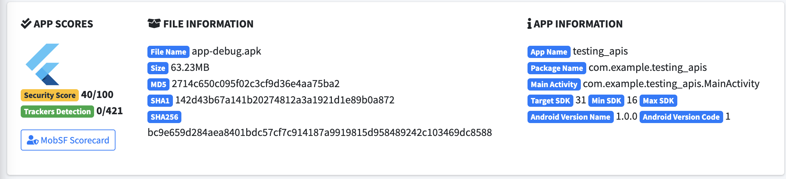 Apresentação da aplicação no Mobsf
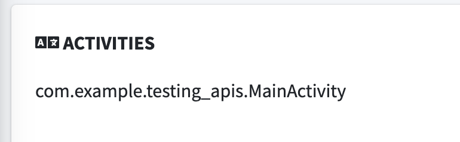 Activity
Carregamento de shared objects
Bibliotecas nativa em C que foram reportados pela ferramenta:
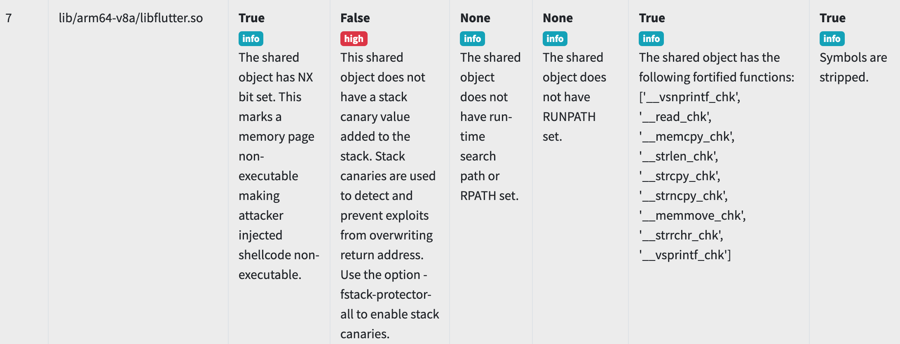 Library Flutter
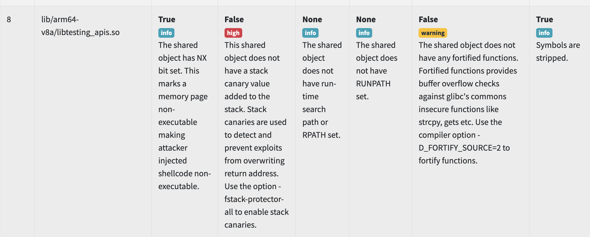 Library JNI
A aplicação não tem muita funcionalidade, existe um botão quando clicado que manda um número aleátorio para tela do celular, esse botão também é responsável por chamar uma função via JNI (Java Native Interface)
Esse é a forma com que a função via JNI foi chamada pelo Kotlin e como ela se torna disponível para o Flutter.
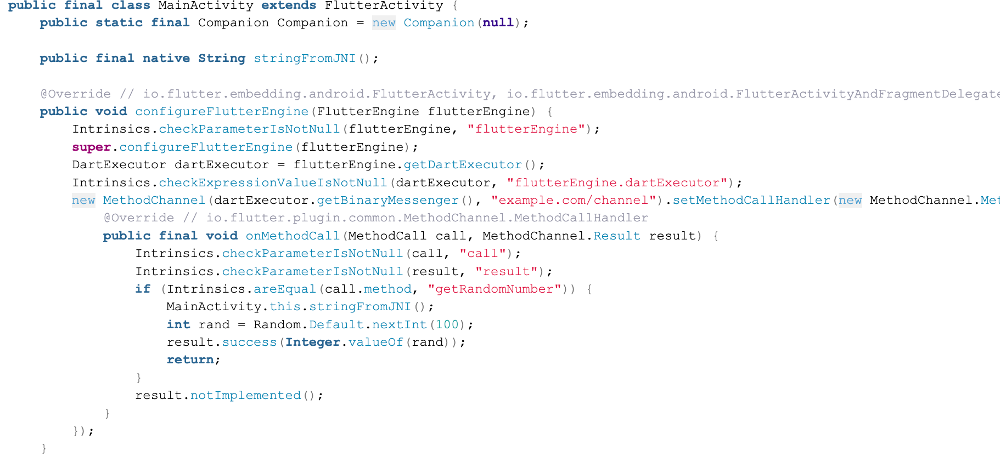 Decompilação código Kotlin em Java
Código fonte direto do Android Studio:
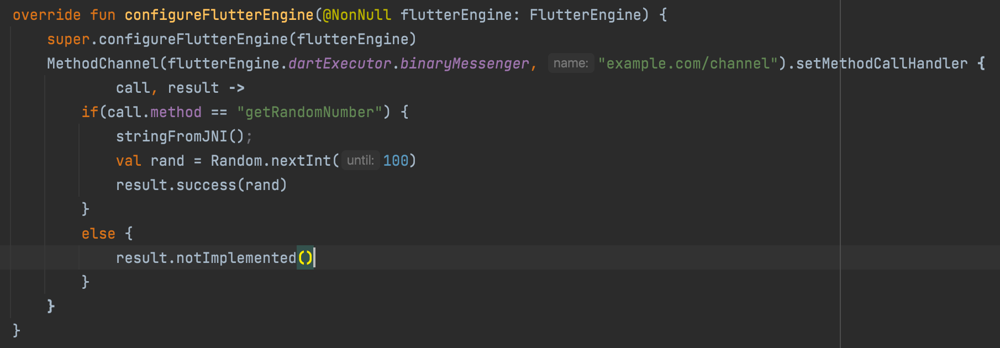 Código fonte kt - Kotlin
Esse é o mesmo trecho de código mas o primeiro seria da decompilação feita pelo Mobsf e o último é o código fonte do aplicativo.
Por enquanto temos funções simples e podemos vê o funcionamento delas utilizando Frida, sem maiores mudanças pois até agora não temos razão para aprofundar a análise estática.
Testando com Frida
adb connect 192.168.107.45:40097
adb -s 192.168.107.45:40097 install app-debug.apk
Vamos deixar o servidor rodando por meio do termux
adb -s 192.168.107.45:40097 shell
run-as com.termux files/usr/bin/bash -lic 'export PATH=/data/data/com.termux/files/usr/bin:$PATH; export LD_PRELOAD=/data/data/com.termux/files/usr/lib/libtermux-exec.so; bash -i'
$ su
$ cd /data/loca/tmp
$ ./frida-server -l 0.0.0.0
Shell utilizando python para acessar com Frida.
$ source /Users/ramonmartins/.frida-env/bin/activate
$ frida version
____
/ _ | Frida 16.1.8 - A world-class dynamic instrumentation toolkit
| (_| |
> _ | Commands:
/_/ |_| help -> Displays the help system
. . . . object? -> Display information about 'object'
. . . . exit/quit -> Exit
. . . .
. . . . More info at https://frida.re/docs/home/
. . . .
. . . . Connected to Local System (id=local)
Aqui podemos ver Frida funcionando corretamente com o dispositivo Android utilizado.
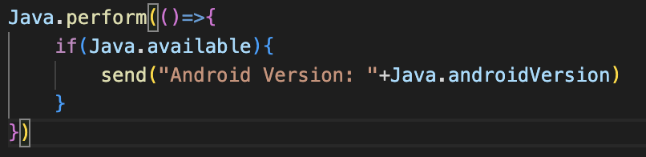 image_caption
$ frida -l main.js -H 192.168.107.45:27042 -f com.example.testing_apis
[Remote::com.example.testing_apis ]-> message: {'type': 'send', 'payload': 'Android Version: 13'} data: None
Vamos dar uma olhada em que classes e métodos estão disponíveis para nós.
Process.enumerateModules({
onMatch: function(module){
if(modName){
if(module.name.includes(modName)){
send('Module name: ' + module.name + " (" + "Base Address: " + module.base.toString() + ")");
}
}
},
onComplete: function(){}
});
if(Java.available){
Java.perform(()=>{
send("Android Version: "+Java.androidVersion)
Java.enumerateLoadedClasses({
onMatch: function(className) {
send("className - "+className);
},
onComplete: function() {}
});
})
}
Se você executou esse código possivelmente nenhuma das classes, modulos que procuramos apareceu, como o libtesting_apis e MainActivity ou FlutterActivity
Podemos adicionar um timeout para finalmente aparecer o que procuramos.
function moduleEnumerate(){
Process.enumerateModules({
onMatch: function(module){
console.log('Module name: ' + module.name + " (" + "Base Address: " + module.base.toString() + ")");
},
onComplete: function(){}
});
}
function enumerateLoadedClasses(lookingClass){
Java.enumerateLoadedClasses({
onMatch: function(className) {
send("className - "+className);
var classVar = Java.use(className)
send(classVar.class.getClassLoader())
},
onComplete: function() {}
});
}
setTimeout(function() {
Java.performNow(function() {
enumerateLoadedClasses("MainActivity");
moduleEnumerate("testing_api");
});
}, 4000);
Resposta: 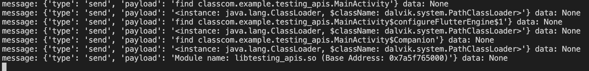 Output do código acima da imagem
Isso ocorre porque não estamos no controle do carregamento das classes e funções do aplicativo, para isso temos que pensar sobre os “carregadores de classe” (ClassLoader etc.) pela nossa análise estática temos apenas um arquivo .dex, isso facilita a procura de quem está responsável pelo carregamento de classes do nosso .dex
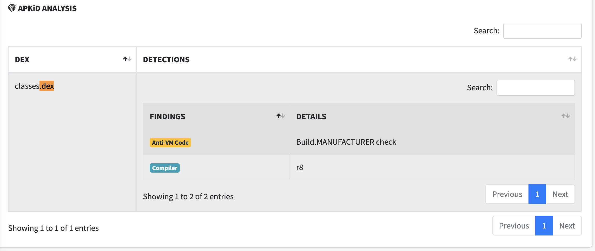 Imagem do classe.dex da aplicação
Carregadores
O Java Class Loaders é um componente do Java Runtime Environment (JRE) que carrega classes Java em uma Java Virtual Machine (JVM)/Dalvik Virtual Machine (DVM)/Android Runtime (ART). Nem todas as classes são carregadas simultaneamente, nem com o mesmo ClassLoader.
Existem vários tipos de carregamento de classes no Android, sendo eles:
- PathClassLoader - É usado pelo sistema Android para seus carregadores de classes de sistema e aplicativos
- DexClassLoader - Carrega tipos de arquivos contendo um arquivo .dex (por exemplo, .jar e .apk ou arquivo .dex diretamente). Esses arquivos .dex (executável Dalvik) contêm bytecode Dalvik.
- URLClassLoader - É usado para recuperar classes ou recursos através de caminhos URL. Os caminhos que terminam com / são considerados diretórios, caso contrário, são considerados arquivos .jar.
O nosso app mostra três carregadores:
['<instance: java.lang.ClassLoader, $className: dalvik.system.PathClassLoader>', '<instance: java.lang.ClassLoader, $className: java.lang.BootClassLoader>', '<instance: java.lang.ClassLoader, $className: dalvik.system.PathClassLoader>']
Dessa forma podemos esperar os Carregadores de Classe ou a classe responsável por carregar arquivos .so ( Shared Objects ).
Esperando pelo carregamento .so:
function hookClassLoader(){
var baseDex = Java.use("dalvik.system.BaseDexClassLoader")
baseDex.findLibrary.implementation = function(name){
var ret = this.findLibrary(name)
if(ret.includes("libflutter.so")){
send(name)
send("Carregando: Lib flutter")
send(ret)
enumerateMethods("MainActivity","*")
}
return ret
}
}
if(Java.available){
Java.perform(()=>{
hookClassLoader();
send("Android Version: "+Java.androidVersion)
})
}
function enumerateMethods(className,method){
const groups = Java.enumerateMethods('*'+className+'*!'+method)
console.log(JSON.stringify(groups, null, 2));
}
Resposta: 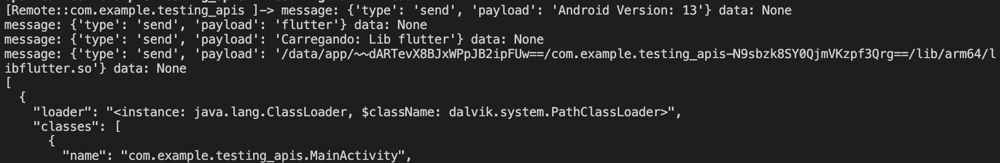 Output do código acima da imagem
De acordo com a Documentação o dalvik.system.BaseDexClassLoader é super classe de dalvik.system.PathClassLoader dessa forma olhamos para o findLibrary e esperamos o libflutter ser carregado, a lógica é de que se o libflutter responsável pelo Layout Visual da aplicação está sendo carregado então as classes em Kotlin já existem na JVM.
Esperando pelo carregamento da Classe:
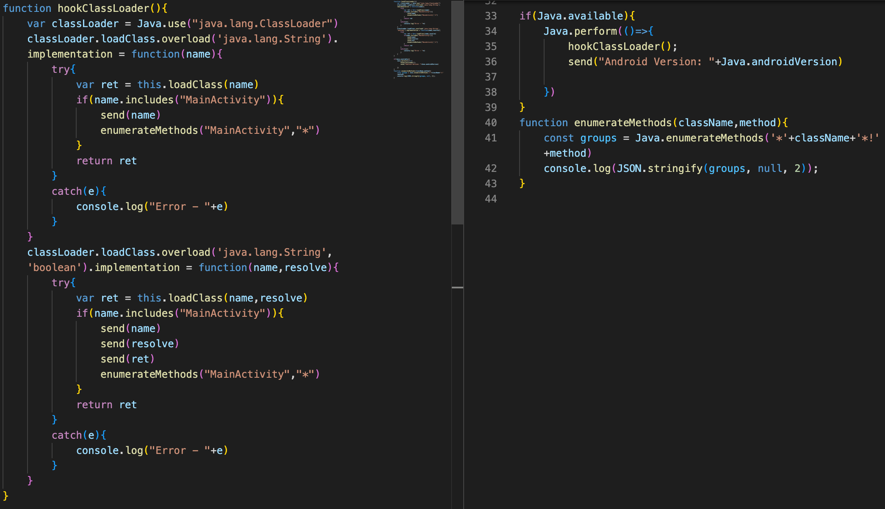 Código esperando carregamento da Classe
Resposta: 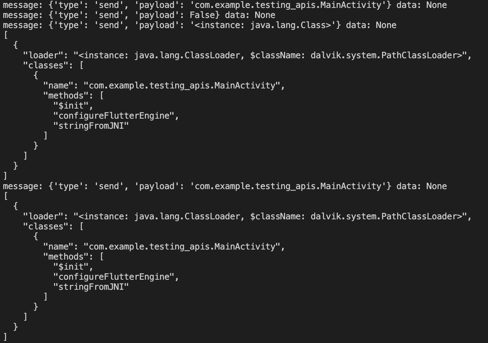 Output do código acima da imagem
Conclusão
Temos diversas maneiras para procurar uma classe, método, módulo ou função e aprendemos um pouco sobre a arquitetura das aplicações Android.